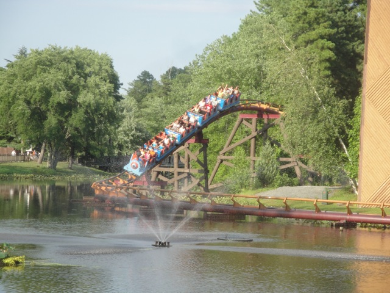
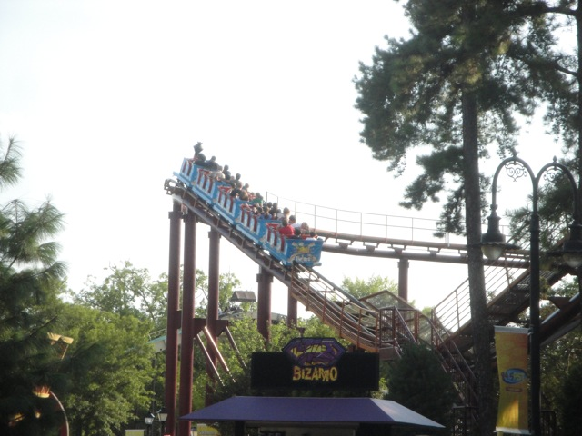

| |
Runaway Mine Train Review

We're here at Six Flags Great Adventure. Today's ride we'll be reviewing for you is Runaway Mine Train, Six Flags St. Louis' mine train. After getting in the cars, you dip out of the station, through some straight track and begin to climb the lifthill. If you're lucky and look to your left, you just might get to see El Toro ejecting some lucky bastards on its amazingness, which begs the question. Why the hell are you on this ride and not on El Toro with those other people? Oh well, make note. Run to El Toro directly after this ride. We crest the lift hill, go through some banked straight track, and we slowly begin to head into a downward helix. Not bad, we slowly get some speed as well as a nice view of Bizzaro as we exit out of the helix and into a small hill. This hill has no airtime at all, it's not very steep and we lose some speed going through it. We then head up another non steep hill and begin going through another turn into some straight track. Yeah, we've got some time to dilly dally over here. We then head down a small hill and go around a curve at the bottom. Hmm, not bad. We actually get a couple laterals here. We then curve up another small hill and see an upcoming bunny hop. Whatever. We go down the tiny drop and WHOA!!! What the flying hell!! Did that tiny little bunny hop on this little more boring than usual mine train just have...EJECTOR AIR!!? Say it ain't so!! Nope, on this otherwise dull family coaster, there is actually a really great moment of ejector air that pulls you directly out of your seat. We then head around a large curve on the water before rising up into the brake run. Yeah, it's over all ready, but honestly, you don't care. This ride just suddenly got so much better than you expected it to be thanks to that pop of ejector air. Admit it. You were not expecting that. And yeah, other than that, it's just a boring and standard mine train, but...just...that airtime!! It's so good!! So powerful!! Granted, it's not El Toro crazy or anything, but that's just right next door. So give it a whirl and see some mine train airtime for yourself.
6/10
Location: Six Flags Great Adventure
Opened: 1974
Built by: Arrow
Last Ridden: June 18, 2021
Runaway Mine Train Photos


Home
|